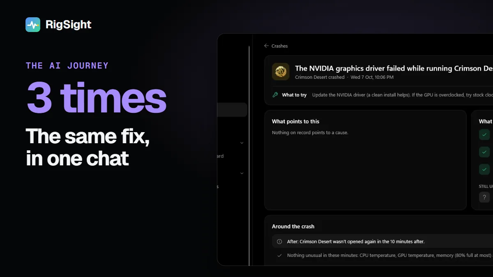

The AI journey, part 6 of 6
What my own chats with RigSight AI got wrong
For two weeks I asked RigSight AI about my own PC like anyone would, then read every answer. It assumed a 144 Hz screen, suggested the same fix three times, and blamed a September crash on a November update. What I changed after each.

The short version
From 29 October to 12 November I asked RigSight AI real questions about my own PC and read every answer. The mistakes were rarely about the PC. They were about assuming, repeating and dates. Each one changed the helper's instructions, and two changed the app.
The pretend PCs I built in October are good at one thing, checking answers to problems I already know. They can't tell me what it's like to use the helper on a real PC, with real questions asked the way people ask them. So from late October I used RigSight AI on my own PC like anyone would. I asked about my crashes, my games and my temperatures, asked follow-ups, pasted errors into it, and then read every answer as if someone else had written it.
Most answers were fine. The ones that weren't went wrong in ways I hadn't expected.
It assumed what it didn't look up
On 29 October an answer told me my screen runs at 144 Hz. No look-up had said that. The model filled in a common number, and it read as fact. The rule I added is short. Never state something about the PC's setup that no look-up gave.
The same day it called the next day "two days after". It had worked the gap out loosely instead of counting the dates. Now it counts how far apart two dates are, and says "the same day" only when it is.
It almost never searched
The helper can search the web on the paid plans. Its first instructions said to search only for what my records couldn't answer. That sounded careful, and in practice it meant it almost never searched. A crash in Control got "play with OBS closed". When I asked it to guide me step by step, I got the diagnosis again instead of steps.
On 30 October I changed it to search for crashes, known fixes and when I push back. For a crash in an app I might not recognise, it does one search on the file name with the error code and the module, and says what the app is. I replayed both conversations against the real model, twice before the change and twice after. After it, both searched and named the app.
The same replay caught a smaller thing. I asked about an app's memory, then asked again later, and the second answer called the first one wrong because the number was higher. Nothing was wrong. The app had grown, from 732 to 839 MB. A reading that changes between two look-ups is now said as a change, not a mistake.
It got the order of things wrong
On 6 November I read back ten of my chats from that week. In one, an app that had crashed on and off since September was tied to an update from 2 November. The update came weeks after the crashes started, so it couldn't have caused them. In another, on an install two minutes old, the answer called the PC healthy, with almost no history to say so. A search that found nothing about the app I'd asked about still got its own paragraph, about other programs.
The fixes were rules about reading. Read the whole crash finding, including since when. Check there is history before calling a PC fine. Leave out a search that found nothing. On 12 November I added that a change has to come before the first problem it's used to explain.
It said the same thing three times
The longest chat was on 12 November, about blue screens. Over several follow-ups it suggested running System File Checker three times. The questions offered under each answer came back the same twice. When I asked "what do I do now?", I got one step. And it said my drives' health was unchecked, though it had already looked it up in that chat.
Follow-ups now get the steps earlier answers gave, so it builds on them instead of starting over. "What do I do?" gets a numbered plan. Asked again, it gives something new and concrete, never "as I said". And if RigSight records something, the helper looks it up instead of sending you to check it yourself.
Two of the fixes from that chat were in the app, not the instructions, and both shipped in 1.11.0. The questions offered under an answer now skip ones the chat already asked or offered. And the same chat cleared heat as a cause because the CPU was at 85°C while only 9% busy, reading low load as proof it wasn't overheating. A crash no longer says the CPU wasn't overheating when it sat well above its usual while doing little.
What reading my own chats taught me
Almost none of these were about knowing PCs. The model knows what a blue screen is and how to read a crash. What it got wrong was the ordinary care a person takes in a conversation. Don't assume, count the dates, don't repeat yourself, and check the order of events. Each of those had to be written down as a rule before it held.
It's also why I keep testing on my own PC first. The pretend PCs check that the right answer comes out. My own chats check that the answer is one I'd want to read.